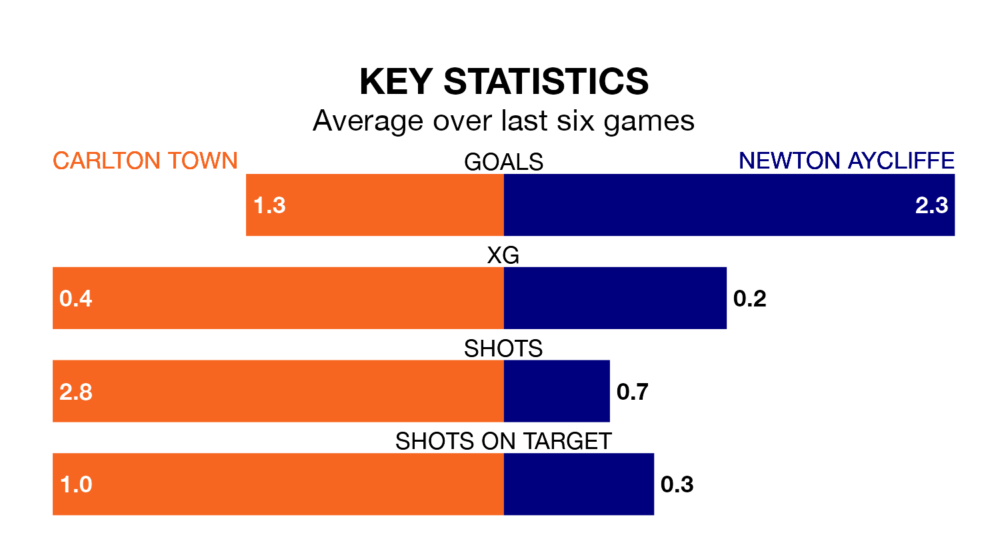

Newton Aycliffe visit Carlton Town on late Tuesday on the back of three consecutive wins in the Northern Premier League Division One East.
Newton Aycliffe have picked up 10 points from their last six games, and they face a Carlton side who have also won their last two matches, and collected 12 points from the last possible 18.
With 22 goals in 15 games so far this season, Carlton are scoring at below the league average rate with 1.5 goals per game. But they are conceding fewer than average too, letting in 17 goals at a rate of 1.1 per game.
Newton Aycliffe, meanwhile, are average scorers, with 1.6 goals per game. They have conceded 2.1 goals per game.
Town are fifth in the table after 15 games, of which they have won 10 and lost five, earning 30 points.
The away team are six places behind the hosts in 11th, with seven wins and one draw putting them on 22 points.
Carlton's last match was on Saturday, a 2-0 win against Sheffield FC.
Newton Aycliffe beat Ashington AFC 4-2 last time out, also on Saturday.
